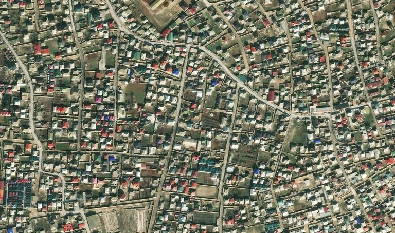
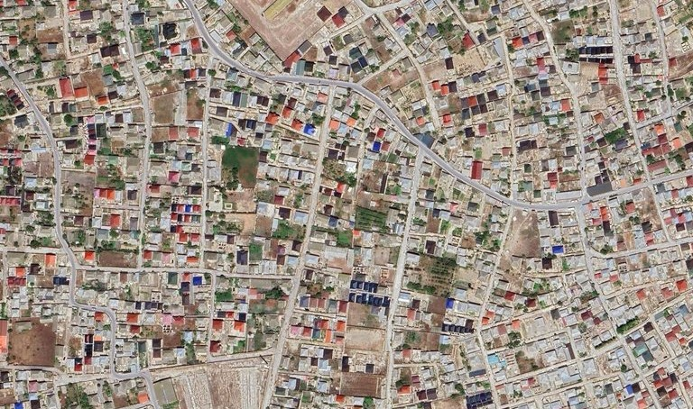
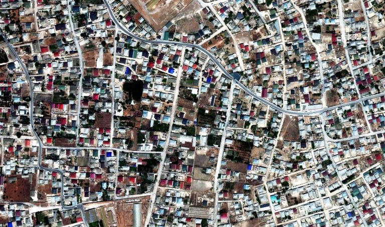
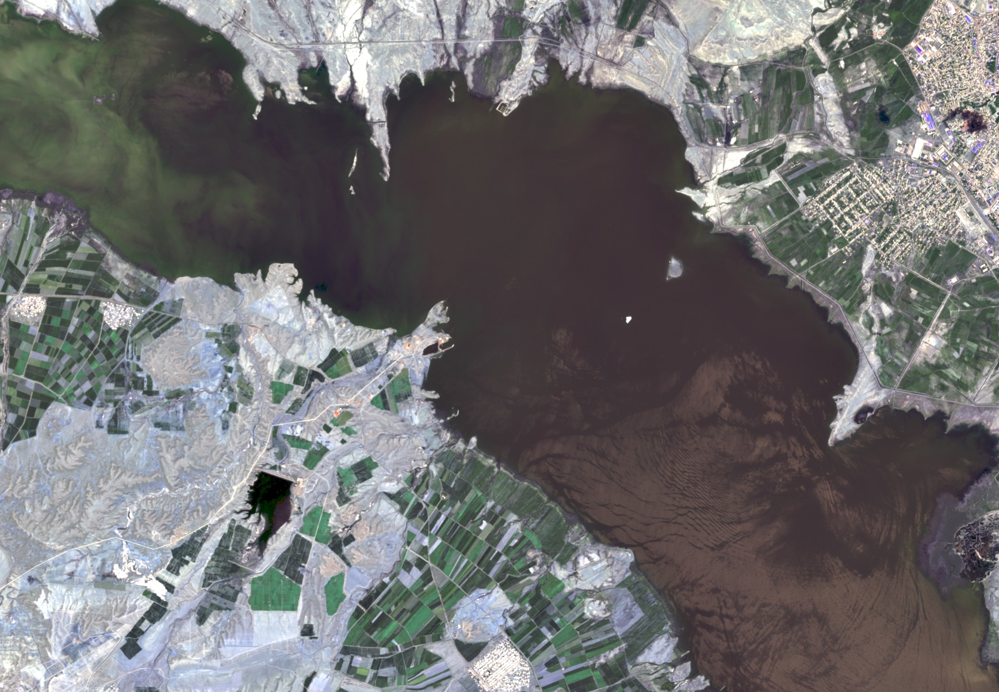
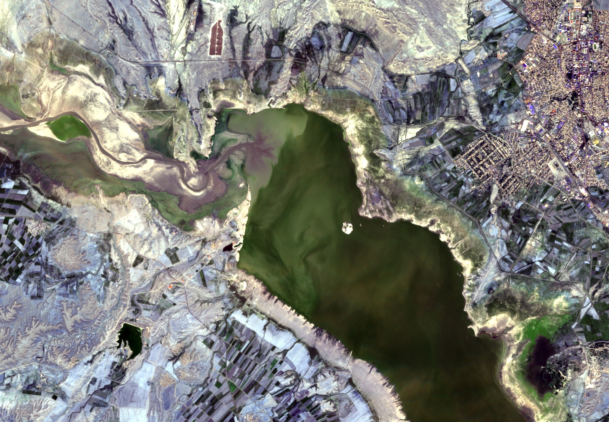
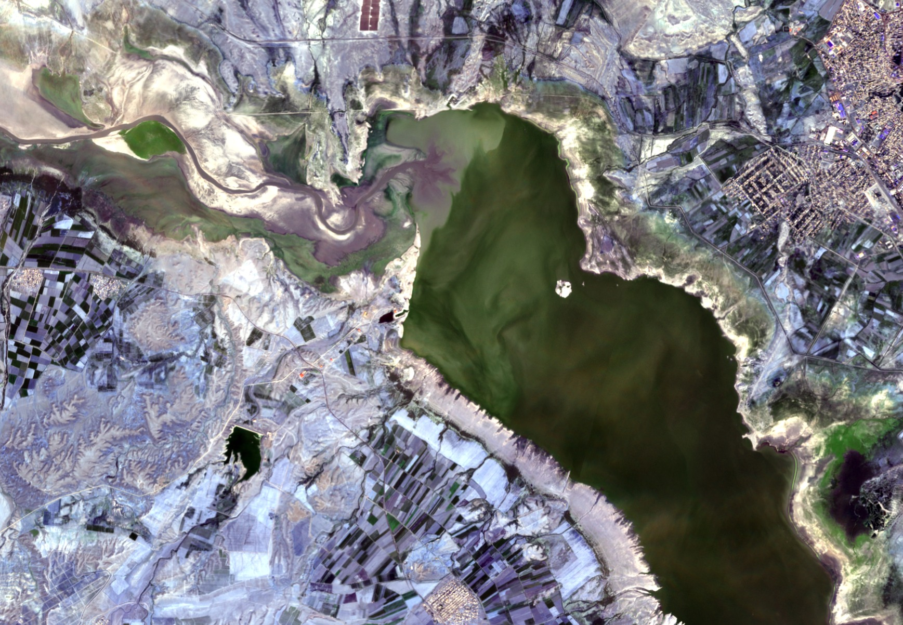
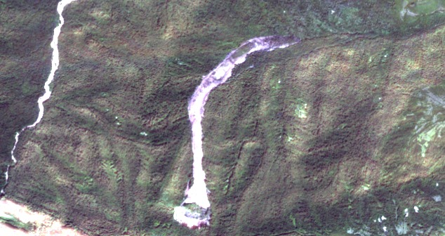
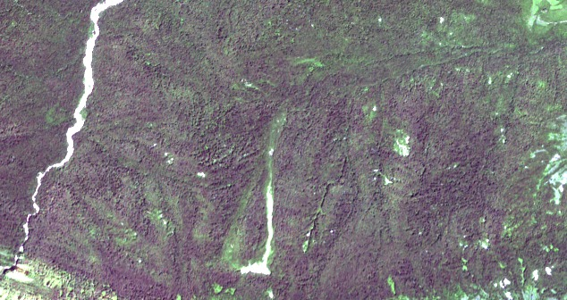
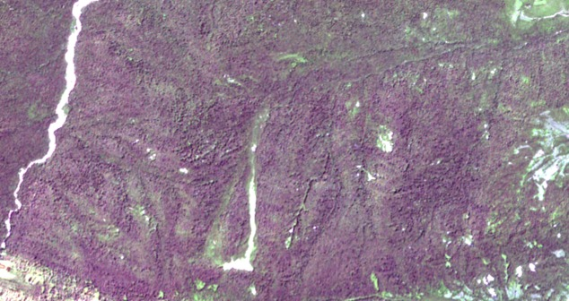

1 — Reference vs Source (before registration) misaligned


Source Reference drag to compareImagery credit: Google Earth
2 — Reference vs Warped output (after registration) co-registered

Warped output Reference drag to compareImagery credit: Google Earth
3 — Water: May vs September, shifted (before registration) misaligned


September (shifted) May drag to compareImagery credit: Sentinel-2
4 — Water: May vs September, warped output (after registration) co-registered

September (warped output) May drag to compareImagery credit: Sentinel-2
5 — Forest: September vs July, shifted (before registration) misaligned


July (shifted) September drag to compareImagery credit: Sentinel-2
6 — Forest: September vs July, warped output (after registration) co-registered

July (warped output) September drag to compareImagery credit: Sentinel-2